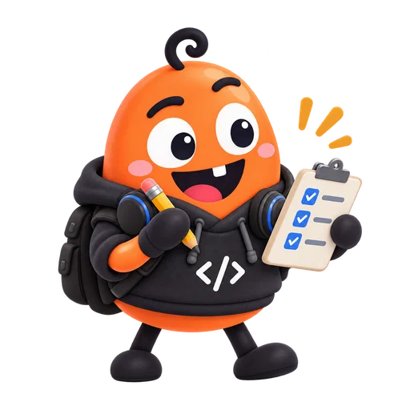
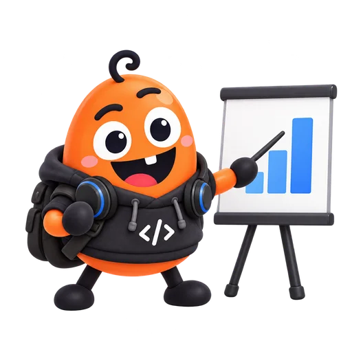
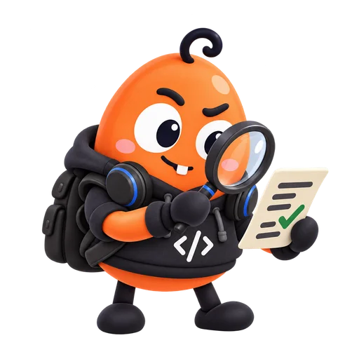

복사본으로
연습 폴더에서 시작
N3 · 프롬프트, 그다음 이야기
산들 독서모임 · 10월 12일 오후 2시
산들도서관 2층 모임방
사전 준비 · 설치와 연습 폴더 ↗
가상 자료로 시작 · N4에서도 같은 모임을 검토
부탁 → 계획 → 작업 → 확인

N3 · 새로운 협업 방식
N3 · 준비 2 · 작업할 자리 만들기
컴퓨터에 새 폴더 만들기
N3 · AI가 실제로 일하니까
연습 폴더에서 시작
비밀번호·개인정보 확인
삭제·설치·외부 공개
모르는 실행 요청에는 “무엇을 하는지 설명해 줘.”

N3 · 화면을 익히는 세 가지 단어
② 대화 — 원하는 일을 평소 말로 부탁하는 곳
N3 · 잠깐, 함께 골라볼까요?
정답 B · 만들 파일과 확인 방법을 함께 부탁합니다.
정답 B · 만들 파일과 내가 확인할 방법을 함께 부탁했어요.
N3 · 실습 1 · 대화창에 붙여넣기

N3 · 실습 2 · 계획 검토
내용 · 작업 범위 · 공개 여부
어려운 말은 “쉬운 말로 풀어 줘.”
확인 버튼을 연습해 보세요.
N3 · 실습 3 · 결과물 열기
컴퓨터에서 열기
두 번 눌러 열기
글씨·내용 확인
파일이 안 보이면, “저장한 위치를 알려 줘.”
N3 · 완료의 기준은 내가 정해요
확인한 항목을 눌러 보세요. 0 / 3
N3 · 실습 4 · 수정 부탁
“제목 글씨를 두 배로 키워 줘.
날짜와 장소는 그대로 둬.”
10월 12일 · 오후 2시
산들도서관 2층 모임방
파일 수정 후 브라우저를 새로고침하면 바뀐 결과를 볼 수 있어요.
N3 · 막혀도, 처음부터 다시 할 필요는 없어요
“쉬운 말로, 한 단계씩 알려 줘.”
“이 오류를 설명하고 고쳐 줘.”
중지한 뒤 “내 부탁을 다시 확인해 줘.”
오류 메시지는 함께 보여 주세요. 사용량 제한·로그인 문제는 앱의 안내를 확인하세요.
N3 · 코드를 몰라도, 하고 싶은 일은 있으니까
메모 → 읽기 좋은 목록
작품 정보 → 소개 페이지
날짜·장소 → 안내 페이지
N3 · 오늘, AI와 만든 첫 결과물
다음에는, 내가 만들고 싶은 것 하나.